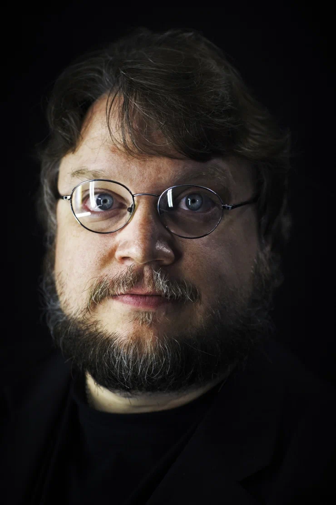

<!DOCTYPE html>
<html>
<head>
        <meta charset="utf-8">
		<link rel="stylesheet" href="style2.css">
	<title>Тихоокеанский_рубеж_режиссёр</title>
    <style>


    </style>
</head>
</html>
<body>
    <main>
		<h1 <a <h1 class="title">Режиссер</h1>
		
		</a>
            </div>
        </figure>
		<div id="info">
            <p>Карьера</p>
            <p>Дата рождения</p>
            <p>Место рождения</p>
        </div>
        <div id="info_two">
            <p>Продюсер, Сценарист, Режиссер, Актер</p>
            <p>9 октября, 1964</p>
            <p>Гвадалахара, Мексика</p>
        </div>
        <div id="description">
            <p>
                Гильермо дель Торо — мексиканский кинорежиссер, сценарист и продюсер.
				Лауреат премии Американской киноакадемии, обладатель наград Британской
				академии кино и телевизионных искусств и «Золотого глобуса», отмечен «Золотым львом»
				Венецианского кинофестиваля.
				Родился в Гвадалахаре 9 октября 1964 года. 
				Торо учился в Институте наук в Гвадалахаре и в Центре исследований
				и кинематографического образования Университета Гвадалахары; с юности занимался гримом
				и спецэффектами — проходил обучение у мастера Дика Смита. В начале карьеры
				основал студию спецэффектов «Некропия», работал на телевидении и участвовал в
				создании Международного кинофестиваля в Гвадалахаре. Вне кинематографа выступил
				как писатель — стал соавтором трилогии романов «Штамм». 
				Гильермо дель Торо начал кинокарьеру с фильма «Хронос», затем
				поставил фильмы «Мутанты», «Хребет дьявола» и «Лабиринт фавна». Международное
				признание закрепили фильмы «Форма воды», «Аллея кошмаров», мультфильм
				«Пиноккио Гильермо дель Торо» и сериал «Кабинет редкостей Гильермо дель Торо».
            </p>
        </div>
        <film>
            <nav><a class="page" href="Pacific Rim.html"><- Режиссер</a></nav>
        </film>
        <copy>
            <h3>&copy; Desing by Буйновский Юрий Дмитриевич</h3>
        </copy>